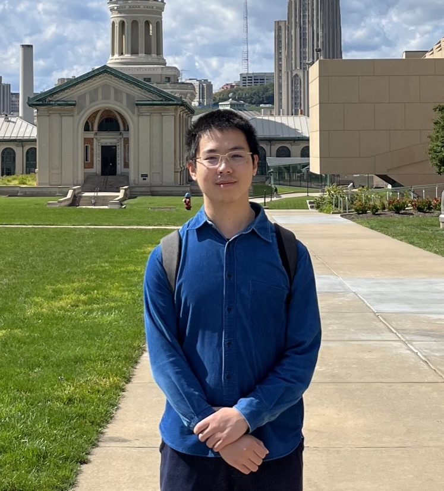

Yige Hong
Postdoctoral Fellow, ISyE, Georgia Tech

- CV (updated Nov 2026)
- Ph.D. Thesis (CMU-CS-26-119)
- Google Scholar
- GitHub
- DBLP
I'm the Beerman Postdoctoral Fellow in the School of Industrial and Systems Engineering (ISyE) at Georgia Tech, hosted by Debankur Mukherjee and Siva Theja Maguluri.
In Fall 2027, I will join the School of Science and Engineering at CUHK-Shenzhen as a faculty member.
I received my Ph.D. from the Computer Science Department of Carnegie Mellon University, where I was very fortunate to be advised by Professor Weina Wang. My dissertation received the 2026 ACM SIGMETRICS Doctoral Dissertation Award.
Prior to starting my Ph.D., I was an undergraduate student at the Chinese University of Hong Kong, Shenzhen (CUHKSZ), where I graduated from the mathematics major with a Bachelor of Science degree.
Email (preferred):
hongyige98 [at] gmail [dot] com
Email (Georgia Tech):
yhong320 [at] gatech [dot] edu
Research interests
I study decision making under uncertainty, with an emphasis on large stochastic systems. My work combines mathematical modeling, algorithm design, and performance analysis. My research interests include:
Queueing and scheduling: I study queueing performance, resource allocation, and scheduling in large service systems. My work includes multiserver queues and stochastic bin packing, motivated by applications in data centers and emerging workloads such as large language model inference.
Decision-making and learning: I use methods from stochastic processes to design and analyze algorithms for stochastic decision problems, including restless bandits and weakly coupled Markov decision processes. My interests also include reinforcement learning.
Selected publications
*co-first-author.
RBs = restless bandits; MDPs = Markov decision processes; WCMDPs = weakly-coupled MDPs.
See the full list of publications.